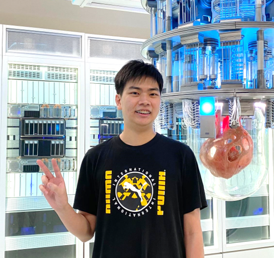
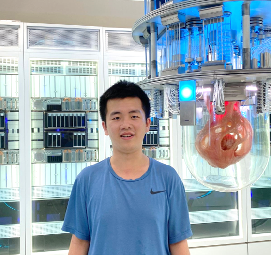
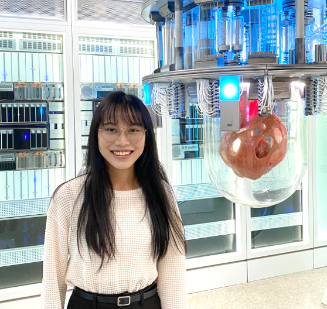
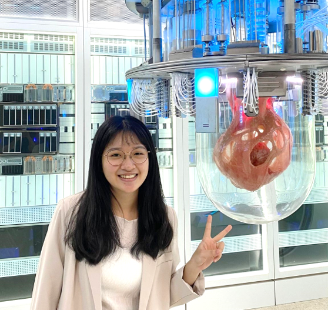

研究助理
陳立恆
國立臺灣大學地理環境資源學系 碩士
國立臺灣大學統計學碩士學位學程 碩士
專案: 防災路線規劃、智慧資訊安全
研究興趣: 時空資料科學, MAUP, 分類演算法
Email: liheng.stat@gmail.com
行政助理
王品閑
國立臺灣科技大學應用科技研究所 博士生
研究興趣: STEAM、地理教育、數位學習
Email: pinxian1091@gmail.com
學程助理
任芃香
國立臺灣師範大學地理學系三年級
專案: TBD
研究興趣: TBU
Email: melodym713jk@gmail.com
GIS課程助教
張自成
國立臺灣師範大學地理學系四年級
研究興趣: Spatial analysis, Remote Sensing, GeoAI
Email: 41023112L@ntnu.edu.tw
電機資訊學院學士班四年級
鄭祐昀

專案: Spatio-Temporal Deep Learning for Urban Mobility: Traffic and Pedestrian Flow Prediction with MRT Data
研究興趣: 深度學習, 網頁開發, 自動化, 開源, EDM& 智慧資訊安全
Email: s11020126@cycu.edu.tw
電機資訊學院學士班四年級
葉柏榆

專案: DRPT: A new technique for evaluating the robustness of synthetic data based on a box-counting algorithm
研究興趣: 密碼學, 財務工程 & 智慧資訊安全
Email: ian920806@gmail.com
電機資訊學院學士班四年級
楊善茵

專案: Determining the Global Epidemic Prevention Zone for Targeting Potential High-risk Origin Countries Through Global Aviation Network: A Case Study of the COVID-19 Pandemic
研究興趣: 晶片設計, 人工智慧 & 資料科學
Email: shanyin0102@gmail.com
電機資訊學院學士班四年級
鄭伊珈

專案: Characterizing the Population Flow Patterns After the 2023 Turkey-Syria Earthquake
研究興趣: 半導體 & 資料科學
Email: selena1108666@gmail.com
臺北市立第一女子高級中學二年級
陳知微
專案: Gravitational Wave Detection Via Deep Learning Approach
研究興趣: 人工智慧 & 重力波
Email: zhiwei.kiwwychen@gmail.com